The Heartwave — mark + wordmark system
Your idea, built: a heart made of sound. Seven audio bars trace the heart's silhouette — love and .fm in one shape, nothing like OurDream's flat heart. And because it's real bars, it can breathe while Alexis speaks (watch the big one). Answer like: "mark 7-bar + P1".
The mark
MHeartwave, 7 bars recommended
Left: live animation (how it behaves when she talks — subtle pulse, stops when idle, respects reduced-motion). Right: static at favicon sizes + real tab.
M2Denser: 9 bars
Smoother silhouette, finer texture; bars blur together sooner at small sizes.
M3Solid: striped heart
Heart-first version — solid silhouette with bar cuts. Sturdier at 16px, less alive.
The wordmark — three ways to pair it
P1Mark-led lockup recommended
The Grok pattern: mark + name, side by side. Works at every size; the mark alone carries favicon and app icon. The dot stays plain rose — the heart lives in the mark only.
ExploreChatGenerateUpgrade
P2Mark as the dot (hero moments only)
The heartwave sits where the period lives — the Omira move. Beautiful at hero size, but at nav size it smears, so navigation would use the plain-dot version (P3) as fallback. Two logo versions to manage.

← nav fallbackChatGenerateUpgrade
P3Quiet wordmark, mark lives in the icon
Text is just text (rose dot); the heartwave appears only as favicon/app icon/loading state. Maximum restraint.
ExploreChatGenerateUpgrade
My verdict: Mark 7-bar + P1. One mark that is unmistakably yours (love + audio, no OurDream shadow), a lockup that survives every size without fallback rules, and the animation hook — the logo literally beats while she speaks — is a brand moment none of the competitors have.